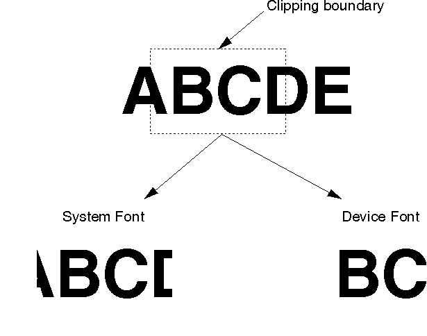

There are two types of fonts:
The advantage of device fonts is that, usually, they are printed in the highest resolution of the device and are faster than system fonts.
Note: Some printer drivers, in particular, the HP LaserJet (LASERJET) and the LaserPrinter (IBM4019) printer drivers provide an intermediate solution. An option on the job properties dialog enables system fonts to be downloaded to the printer as soft fonts.
As stated earlier, an application must provide the user with the ability to choose fonts and, in particular, to choose a device font over a system font to achieve better performance. A standard font dialog box should be used (see WinFontDlg).
When an application uses device fonts, and the output mixes text and graphics pictures, the device fonts are clipped per character. System fonts give more precise clipping to the pel. The following figure illustrates the results from clipping two lines of text: one generated in a system font; the other, in a device font.

Character Clipping Results for Device and System Fonts
The available device fonts can be queried, using GpiQueryFonts, in either an OD_INFO or an OD_QUEUED device context. Device fonts are returned with negative lMatch numbers. Then the appropriate logical font can be used after calling GpiCreateLogFont.
If, during the printing process, a logical font is not created, the printer driver uses its default font for the printer, which usually is 12-point Courier.
There are two design choices for device fonts: